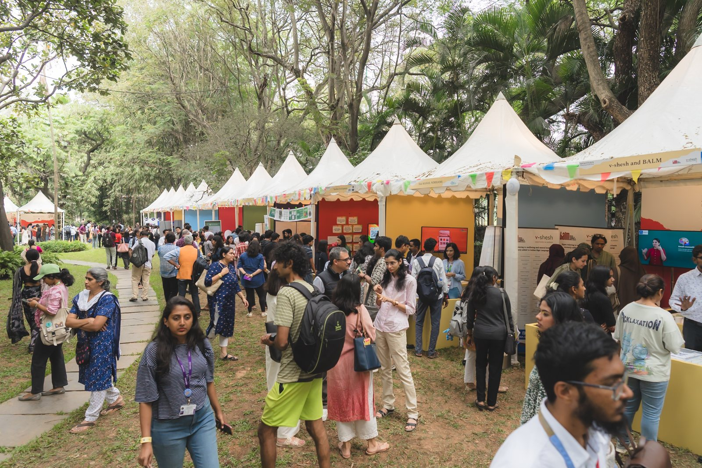
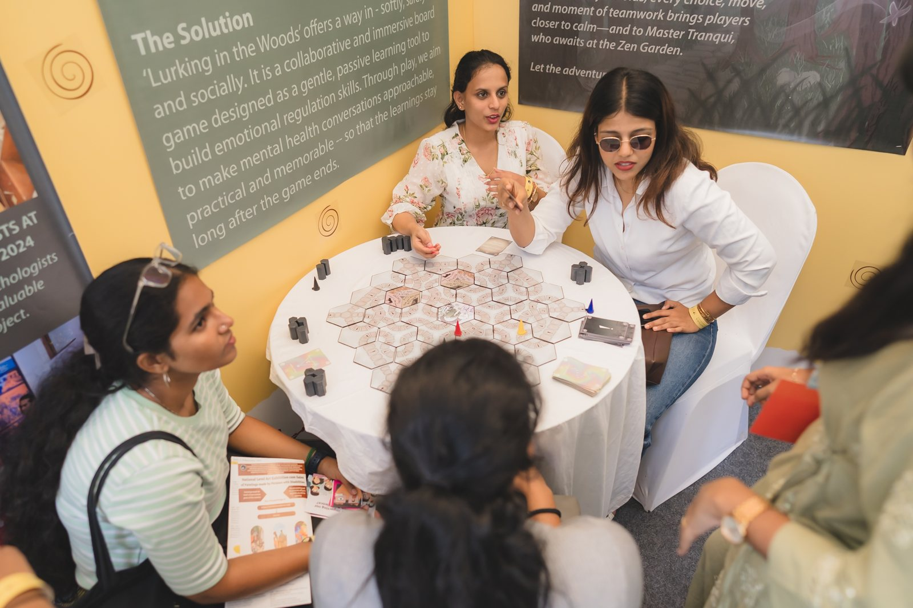
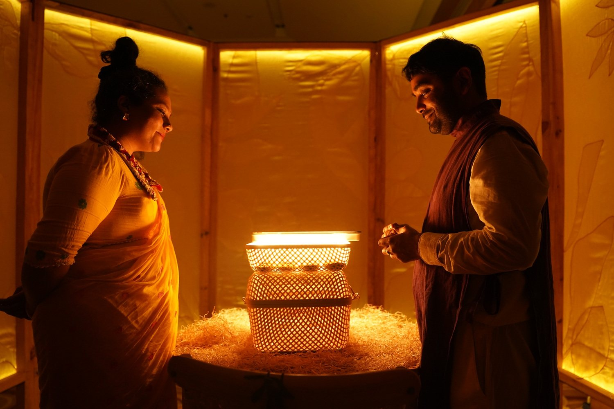
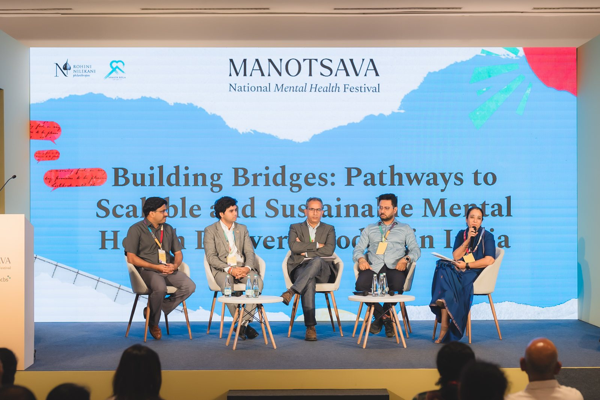
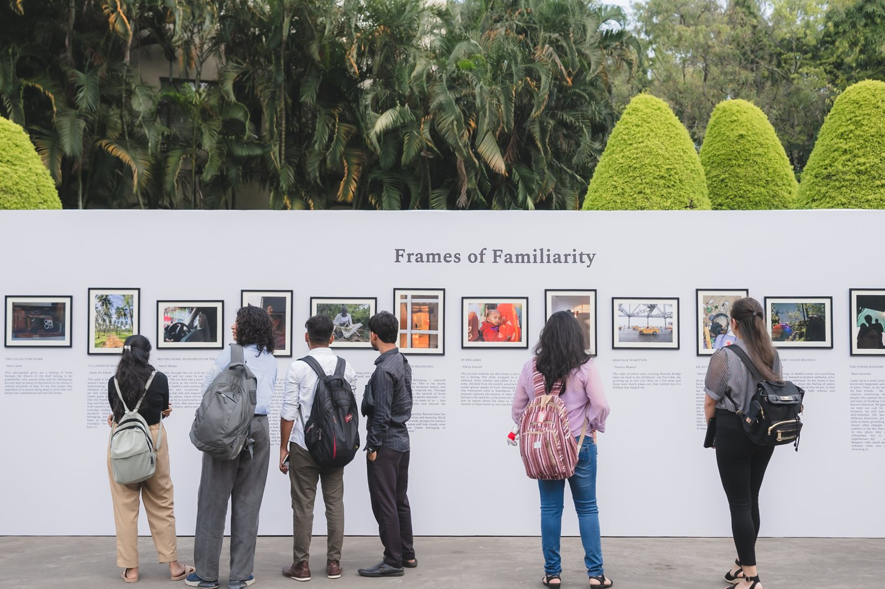
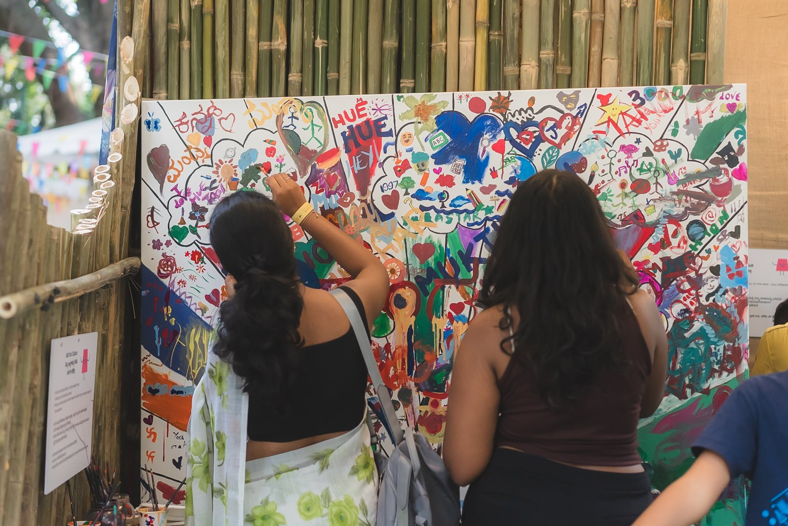
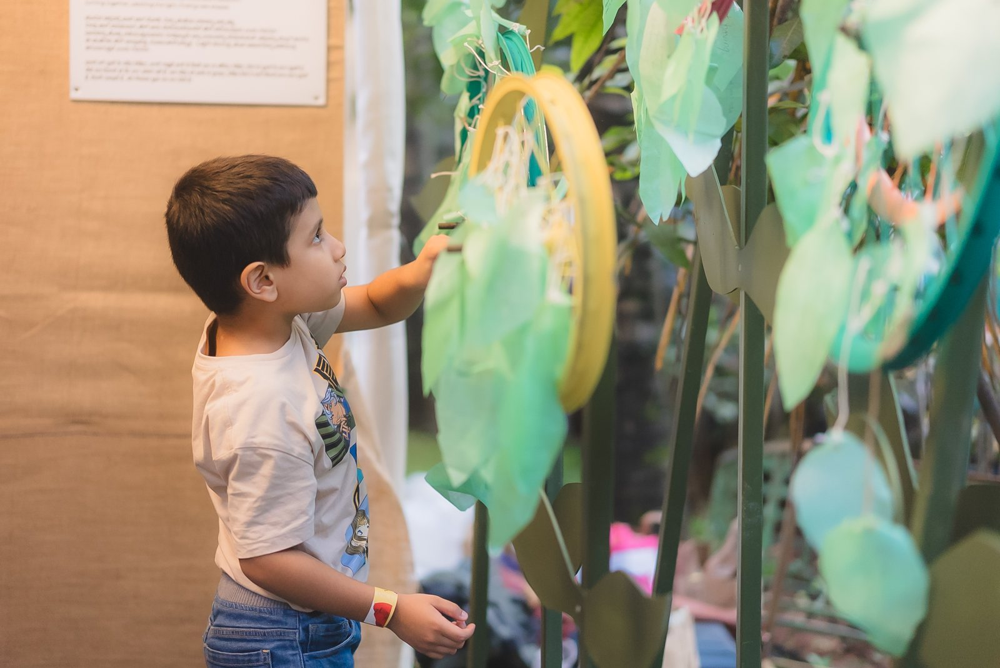
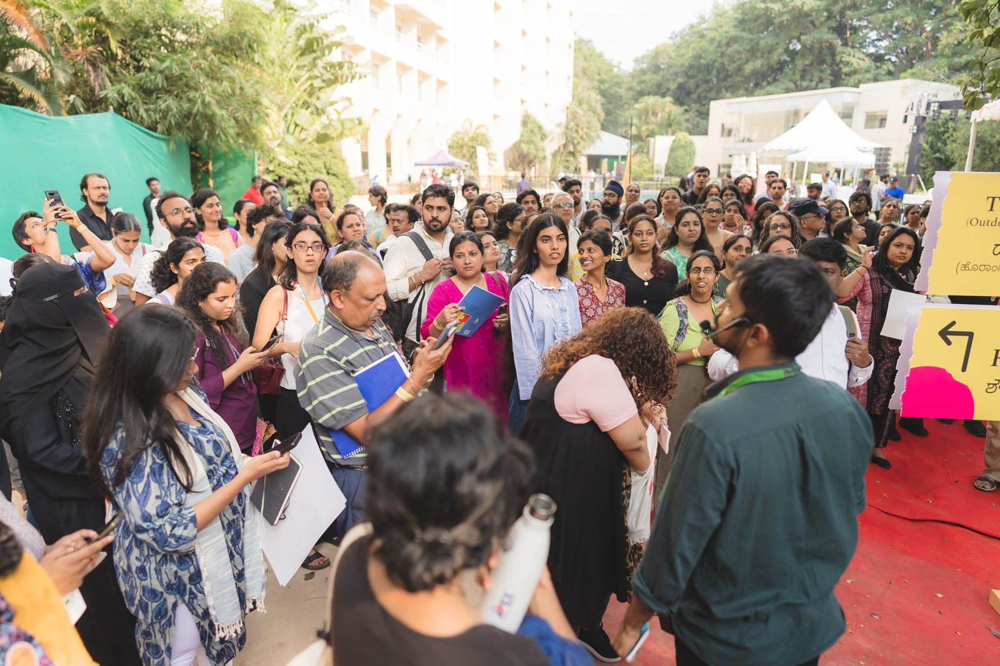

Manotsava
The National Mental Health Festival. I'm part of the curatorial team, working on the festival's creative production.

- ROLE
- Curatorial team · Creative production
- EDITIONS
- 2024 at NIMHANS · 2025 at The Lalit Ashok · 2026 in progress
- BY
- Rohini Nilekani Philanthropies, NIMHANS, NCBS
- WEBSITE
- nationalmentalhealthfestival.com
A festival that puts science, lived experience and the arts in the same room, and makes it easy for anyone to walk in.
Manotsava grew out of the Rohini Nilekani Centre for Brain and Mind, a partnership between NIMHANS and NCBS. While a separate symposium speaks to researchers, the festival is made for everyone else: parents, students, workers, caregivers, people with lived experience, and the curious.
The first edition was held at NIMHANS. The second, in November 2025 was at The Lalit Ashok.
Curating through an open call
Programming starts with an open call. In 2025 it drew 720 proposals from across the country. Each was reviewed with academics from the Rohini Nilekani Centre for Brain and Mind at NIMHANS and NCBS, who helped us select panels, workshops, sharing circles and stalls for quality, relevance and the potential for real engagement.
Building on the first edition, we looked for topics not covered before and responded directly to audience feedback. That led to sharing circles, a new format for intimate, peer-led conversations, and Bachpan Manao, a Children's Zone focused on young children and their parents.
My work sits on the creative production side: shaping how the programme meets the public, from formats and spaces to artist commissions and the pre-festival events that carry the festival into the city.
SIX THEMES, 2025
- 01Growing upParenting teenagers, exam pressure and mental health in higher education.
- 02Identities & relationshipsMarriage and intimacy, caregiving, queer and trans relationships, masculinity.
- 03Body & mindGenetics, the gut microbiome, ageing, and workshops in dance, music and play.
- 04Workplace & societyBurnout, urban stress, living through conflict, inclusion for persons with disabilities.
- 05Crisis & recoveryLived experience, suicide as a collective responsibility, severe mental illness.
- 06Healing pathsMovement and sport, emerging psychedelic treatments, and digital tools.







Artists and programmes
Edition 2 commissioned Bengaluru folk-rock band Swarathma to premiere Belongaluru, a new music project on what it means to belong in the cities we live in. Nitish Jain's Shahi Tukra, an immersive, multi-sensory installation on care and bedtime stories, travelled from Serendipity Arts Festival. MD Pallavi closed the festival with a musical dialogue.
Keynotes included neuroscientist Richard J. Davidson on well-being as a skill, and Rohini Nilekani, Kiran Mazumdar-Shaw and Nikhil Kamath on mental wealth at work. Before the festival, Frames of Familiarity showed 30 photographs on belonging chosen from 122 entries, Screening the Mind brought six films and 500+ people to Bangalore International Centre, and an activation took the conversation into Cubbon Park.
CREDITS & SUPPORT
Presented by

 Festival
Festival